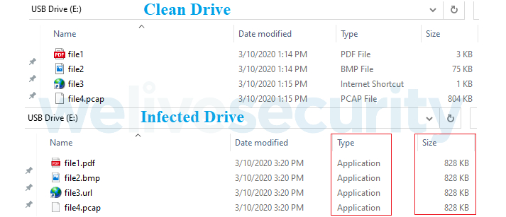
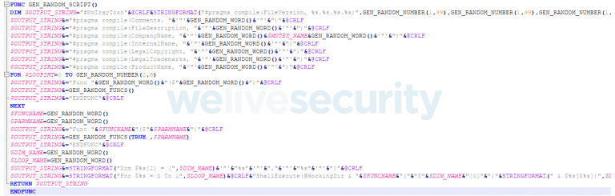
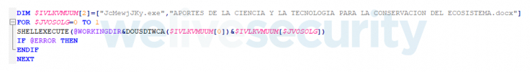
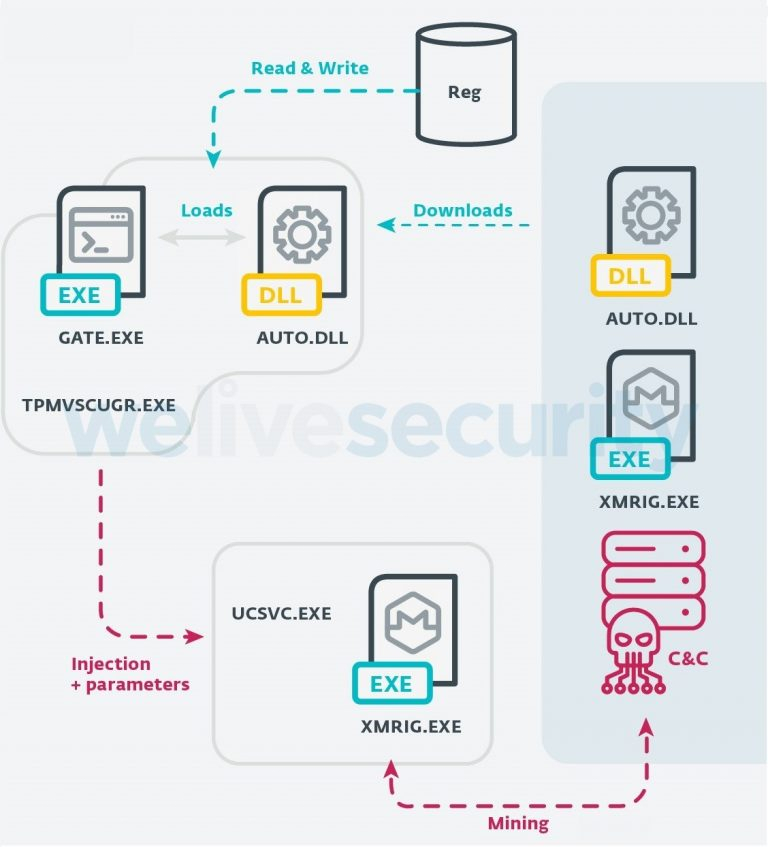

VictoryGate Botnet
It has been observed that a Botnet named VictoryGate is spreading, this botnet has been active since at least May 2019. Till date, three different variants of initial module have been identified along with ten secondary payloads that are downloaded from file hosting websites.
Botnet was designed for cryptocurrency Monero mining, abusing the compromised devices resources, resulting slower down the performances. It is also capable to download and execute additional payloads by commands of Botmaster. The malicious code uses all the available threads to perform cryptocurrency mining resulting in 90-99% CPU load thus slowing down infected device and causing overheating that could even damage it. Also, when a USB drive is connected to infected machine, its files are copied in the hidden directory by malicious code.
The VictoryGate bot uses only subdomains registered at dynamic DNS service provider No-IP to control infected devices. These subdomains have been taken down by No-IP and co-ordination thus removing the control of bots from the attacker. The list of domains is as follows:
C&C Domains:
- scitie.ddns[.]net
- ddw.ddns[.]net
- c0d3.ddns[.]nets
- volvo.ddns[.]net
- xcod.ddns[.]net
- mrxud.ddns[.]net
- d001.ddns[.]net
- xkm.ddns[.]net
- luio.ddns[.]net
- xcud.ddns[.]net
- aut2scr.ddns[.]net
- fanbmypersondrive[.]icu
- mydrivepersonpdvsa[.]icu
- mydrivepersonfanb[.]icu
- mycountermppd[.]xyz
- calypsoempire.ddns[.]net
- mgud2xd.ddns[.]net
- aut0hk.ddns[.]net
- xcud.zapto[.]org
- accountantlive[.]icu
- shittybooks[.]review
- hakerz123.ddns[.]net
- jcmewjjkyc0d3.ddns[.]net
- urtyerc0d3.ddns[.]net
- MoOHyAYeuaut2scr.ddns[.]net
- pNUMWWDLjPmzg.ddns[.]net
- gJyapcAGoc0d3.ddns[.]net
- OHOFqlXNJluio.ddns[.]net
Propagation mechanism:
The only propagation mechanism observed is through removable devices.

Figure:1 Comparison of a drive before & after compromise (Source: ESET)
The infected USB drive have all the files with same names and icons that it contained originally (Fig.1). However, original files are copied into a hidden directory in root on the drive by malicious code, then it uses Windows executables (AutoIt scripts) compiled on the fly as apparent namesakes (Fig 2).

Figure:2 Template used by VictoryGate to compile the propagation scripts (Source: ESET)
It is also observed that the build process adds random metadata to each file so that any two compiled scripts will have different hash/checksum.
The infected USB drive would appear benign to the victims, but when they attempt to open a file, AutoIt script opens both , the intended file and initial module of bot (Fig.3), which copies itself to %AppData% and places a shortcut in the startup folder, to achieve persistence at the next reboot.

Figure:3 Propagation scripts showing launch of a regular file along with executing malicious module (Source: ESET)
This module is an approx. 200MB .NET assembly containing a huge array of garbage bytes to avoid scanning by security products. The array also contains a XORed and gzip-compressed DLL that, at runtime, is deciphered and loaded with a late binding call using the .NET Reflection API.
The bot injects an AutoIt-compiled script into legitimate Windows processes to communicate with the command and control (C&C) server; it is also able to download and execute additional payloads. The Botmaster sends command to infected nodes for downloading secondary payloads
Payloads::
The bot attempts to download payloads in the form of AutoIt-compiled scripts.

Figure:4 Workflow of downloaded payload (Source: ESET)
The payloads inject code into a legitimate Windows process and attempt to inject XMRig mining software into the ucsvc.exe (Boot File Servicing Utility) process. Once the ucsvc.exe process is injected with the XMRig miner, the C&C will start the mining on the node. The malware uses a stratum/XMRig proxy to hide the mining pool and terminates the mining process when the user opens Task Manager, to avoid to show the CPU usage. Mining is resumed as soon as Task Manage is closed.
Indicators of Compromise:
Sample Hashes:
- 398C99FD804043863959CC34C68B0305B1131388
- a187d8be61b7ad6c328f3ee9ac66f3d2f4b48c6b
- 483a55389702cdc83223c563efb9151a704a973e
- 686eef924e6b7aadb5bcff1045b25163501670e6
Filesystem:
- %ProgramData%\JcmewjJky\jcmewjjky.ico
- %ProgramData%\JcmewjJky\jcmewjjky.exe
- %ProgramData%\JcmewjJky\jcmewjjky.au3
- %AppData%\Microsoft\Windows\Start Menu\Programs\Startup\ctfmon.url.lnk
- %AppData%\Microsoft\Windows\Start Menu\Programs\Startup\tpmvsucgr.url
- %AppData%\tpmvscugr.exe
- %AppData%\ctfmon2.exe
- HKCU/Software/JcMewjJKy
-
HKLM/Software/Microsoft/Windows
NT/CurrentVersion/Schedule/TaskCache/Tree/rwIAMblfuvoss - HKCU/Software/Victory
Payload URLs:
- gulfup[.]me/i/00711/2czcy5xvh7br.jpeg
- gulfup[.]me/i/00711/a8nr26g1zcot.jpeg
- gulfup[.]me/i/00711/6400e1i9fsj6.jpeg
- gulfup[.]me/i/00711/pwgzuq5902m2.jpeg
- gulfup[.]me/i/00711/lhm3w37zuiwy.jpeg
- gulfup[.]me/i/00711/3mwdm6tbgcq6.jpeg
- gulfup[.]me/i/00712/sy8rtcxlh1pu.jpeg
- gulfup[.]me/i/00712/o56zgjhefny0.jpeg
- b.top4top[.]io/p_152411ncc1.jpeg
- pastebin[.]com/raw/fEAuhPYh
Countermeasures:
- Keep software and OS up-to-date so that attackers may not take advantages of or exploit known vulnerabilities.
- Keep updated Antivirus/Antimalware software to detect any threat before it infects the system/network. Always scan the external drives/removable devices before use. Leverage anti-phishing solutions that help protect credentials and against malicious file downloads.
- It is also important to keep web filtering tools updated.
- Change default login credentials as they are readily available with attackers.
- Use limited privilege user on the computer or allow administrative access to systems with special administrative accounts for administrators.
- Avoid downloading files from untrusted websites.
- Network administrators should continuously monitor systems and guide their employees to recognize any above-normal sustained CPU loading activity on computer workstations, mobile devices, and network servers. Network activity should continuously be motored for any unusual activity.
- Maintain appropriate Firewall policies to block malicious traffic entering the system/network. Enable a personal firewall on workstation.
- Block the IP addresses of known malicious sites to prevent devices from being able to access them. Activate intelligent website blacklisting to block known bad websites.
- Block websites hosting JavaScript miners both at the gateway and the endpoints.
-
Maintain browser extensions as some attackers are using malicious browser extensions or poisoning legitimate extensions to execute cryptomining scripts.
Go beyond intrusion detection to protect servers with runtime memory protection - for critical applications and server workloads, ensuring a defense against actors who already have a grip on your server.
- Disable Autorun and Autoplay policies.
- Consider using application whitelists to prevent unknown executables from launching autonomously.
- Delete the system changes made by the malware such as files created/ registry entries /services etc.
- Monitor traffic generated from client machines to the domains and IP address mentioned in Installation section.
- Disable unnecessary services on agency workstations and servers.